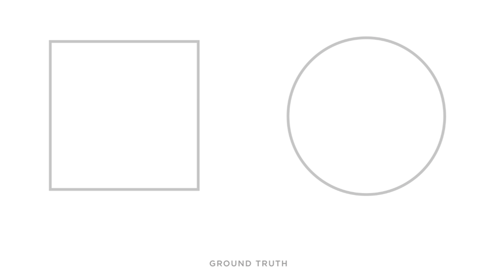
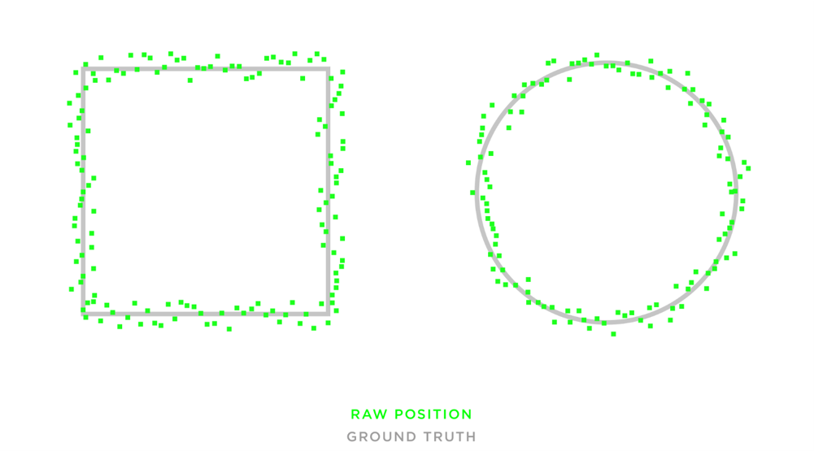
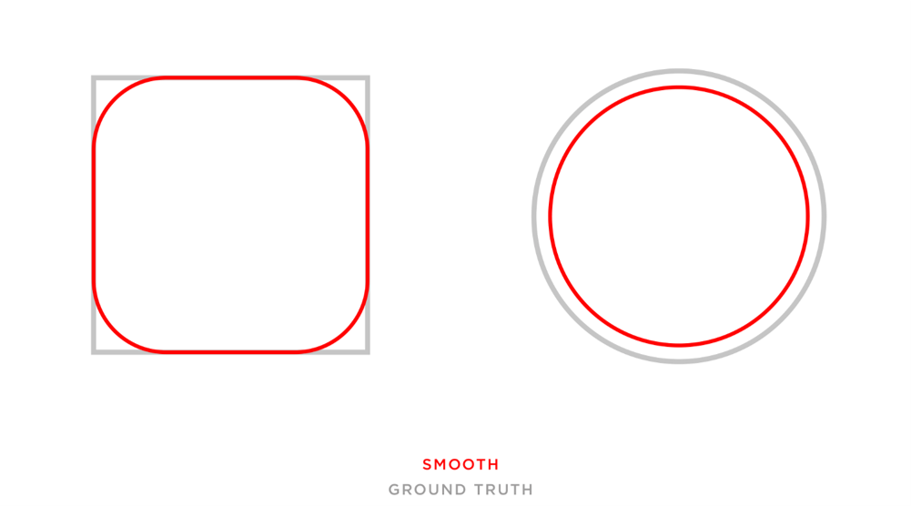
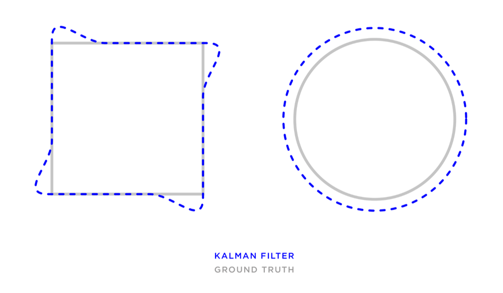
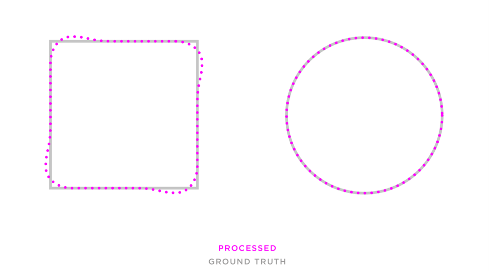

Location Data Filtering
The Quuppa system generates raw location estimates that can be filtered in various ways to improve the quality of the dot-on-the-map visualisations for Quuppa projects. For most applications, we recommend using the smooth position filter.
This section aims to explain the difference between the raw position generated by the Quuppa Positioning Engine (QPE) and the output available when using different filters. This information helps you select the correct filtering for your specific use case.
Two simple shapes, a square and a circle, serve as example tag paths to demonstrate the distinct characteristics of each filter when handling movement patterns such as sharp corners and continuous curves.

Raw Position
The raw position output is the unfiltered positioning estimate (x, y and z coordinates for the tag) calculated by the QPE. This real-time data output serves as the baseline onto which any of the chosen filters can be applied.
While the raw position provides the real-time position of the tag as calculated by the QPE, we do not recommend it for visualisations of how the dot moves around the map. Without filtering, the position appears to “jump” on the screen. This occurs because the QPE outputs positioning data points exactly as they are calculated. Because tags transmit at predefined intervals and environmental factors can cause packet loss, the raw position consists of these individual, discrete data points. The degree of tag jumping depends on various project settings, including tag configurations, air interface load management and the deployment environment.
In the image below, the green dots represent the individual data points provided by the QPE.

Smooth Position
When you apply the smooth position filter to raw position data, the QPE uses historical data regarding how the tag has moved around the tracking area to calculate averages. These averages are used to smooth out the jumps in the visualisation and provide an even path for the tag.
The filtering creates a slight lag in the positioning results, but since the delay is minimal, it does not significantly impact most applications or use cases. We recommend the smooth position filter for the majority of applications based on the Quuppa system because it improves the user experience by providing a more even tag trajectory and a smoother dot on the map.
In the image below, the red line represents the smoothed tag trajectory provided after applying the smooth position filter to the raw position data points.

Kalman Position
The Kalman position is a predictive filter that you can apply to the raw position estimate. The filter uses the tag direction and speed to predict the most likely location in a future moment, such as one minute later. The calculation assumes the tag continues at the same pace along the same trajectory.
The Kalman position provides a smooth tag trajectory in real time because it uses predicted data points rather than historical data. It performs well when the tag trajectory is stable, such as in the circle example below. However, it is limited if the tag trajectory is unpredictable or changes direction or speed suddenly. For example, a sharp 90-degree corner (see image below) is challenging because the prediction assumes the tag continues on the current trajectory.

For more about Kalman filtering in statistics, click here.
Processed Position
A processed position filter is also available for the raw position data generated by the QPE. This filter uses a combination of historical data (like the smooth position) and predictive data (like the Kalman position) to extrapolate where the tag has moved across the map. Because the processed position requires both historical and predictive data to be filtered, it is rarely used for real-time applications.
The filter is typically applied later to recorded data, such as the data recorded by the QPE and viewed in the Quuppa Data Player QDP. It is particularly useful for applications that overlay the tag trajectory onto, for example, video footage.
As shown in the image below, the processed position provides a very accurate positioning result that follows the determined path, the square or circle, very closely.
